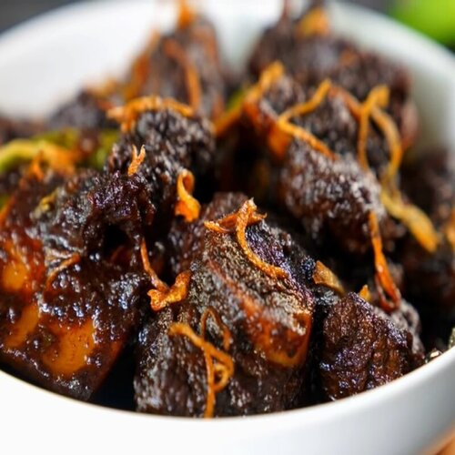

Kala Vuna

Kala Vuna, also known as "Mutton Kala Bhuna," is a traditional Bengali dish renowned for its rich and robust flavors. It involves slow-cooking mutton (goat meat) in a thick, spicy gravy made from a blend of aromatic spices, including cumin, coriander, cloves, and cinnamon. The dish gets its name from the "bhuna" cooking technique, which entails frying the meat and spices until they become intensely flavorful and develop a dark, almost blackened color. Kala Vuna is a beloved delicacy in Bengali cuisine, often enjoyed with steamed rice or Indian bread like paratha or naan.
Ingredients
- Mutton (Goat Meat)
- Onions
- Garlic
- Ginger
- Tomatoes
- Green Chilies
- Mustard Oil
- Cumin Seeds
- Coriander Powder
- Cloves
- Cinnamon Stick
- Red Chili Powder
- Turmeric Powder
- Garam Masala Powder
- Salt
- Fresh Coriander Leaves (for garnish)
Steps
- Heat mustard oil in a heavy-bottomed pan or kadai.
- Add cumin seeds, cloves, and a cinnamon stick to the hot oil. Sauté until aromatic.
- Add finely chopped onions and sauté until they turn golden brown.
- Stir in minced garlic and ginger, and cook until the raw smell disappears.
- Add sliced tomatoes and green chilies, and cook until the tomatoes become soft and the oil starts to separate.
- Now, add mutton pieces and cook on high heat, stirring occasionally, until they brown.
- Reduce the heat and add coriander powder, red chili powder, turmeric powder, and salt. Cook the spices with the mutton until the oil separates.
- Cover the pan and simmer, stirring occasionally, until the mutton is tender and the oil floats on top.
- Sprinkle garam masala powder and mix well.
- Garnish with fresh coriander leaves.
- Your delicious Kala Vuna is ready to be served hot with steamed rice or Indian bread.